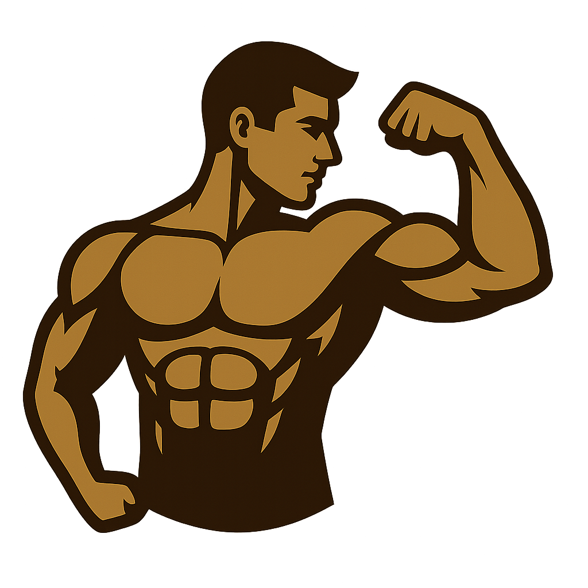

Día de Entreno
Inicio
Empresa
Productos
Contacto
Cargando rutina...
Cardio para hoy:
Error: No se encontró la rutina o este es un día de descanso.
Añadir ejercicios adicionales:
Selecciona un grupo muscular de tu rutina para añadir un ejercicio extra.
-- Elige un grupo muscular --
-- Elige un ejercicio --
Añadir a la Rutina
Guardar Ajustes del Día